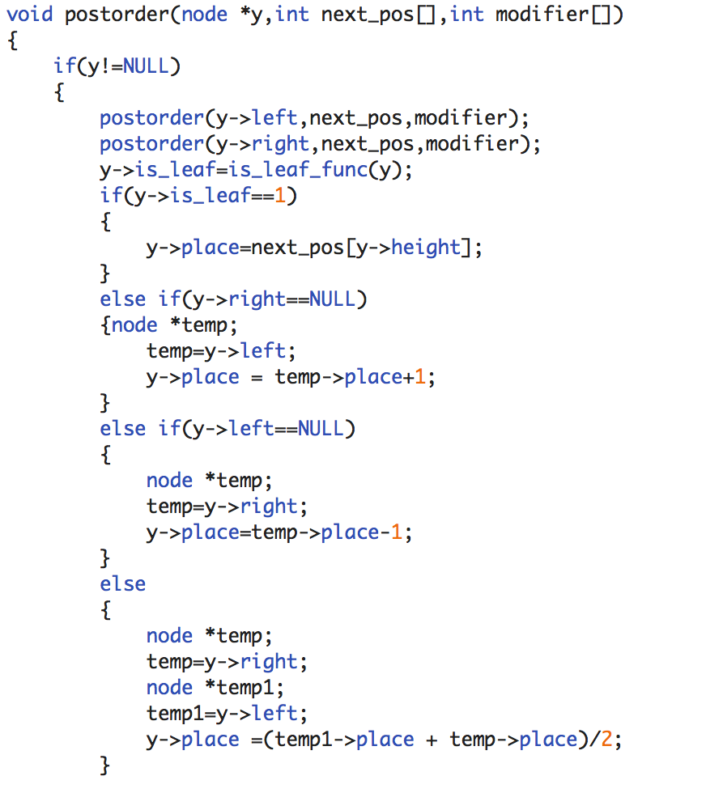
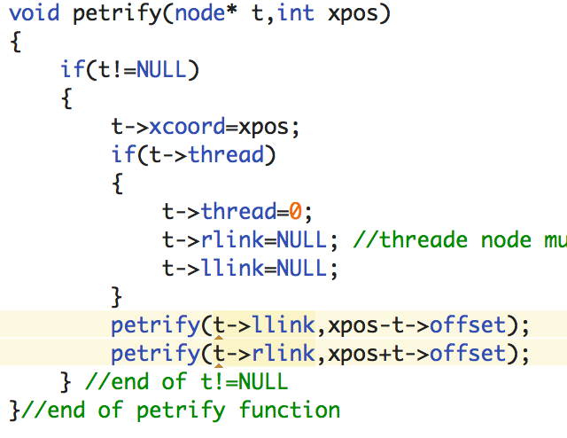
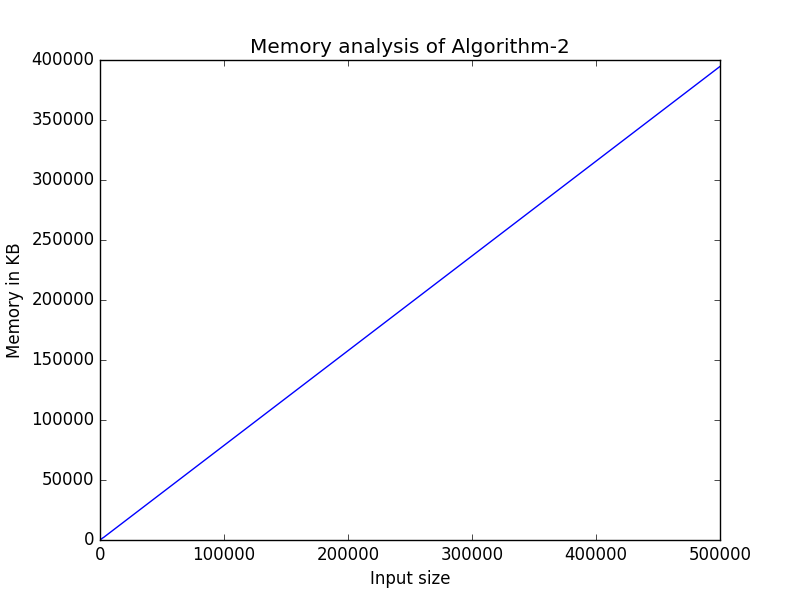

Paper-1
Tidy Drawings of Trees
CHARLES WETHERELL and ALFRED SHANNON
All the functions of the algorithm run in O(1) space; execpt for the postorder function, that uses recursion.
Fig. 1. Code snippet of Algorithm WS - of postorder function
Here, the post order is called across each of the nodes' children. This means that unless the root is NULL, every child is allocated memory on the Stack, before being popped back. Hence, the amount of space allocated is directly proportional to the number of nodes in the tree, which is n. Hence, in the worst case scenario, the space complexity is O(n), and in the best case, it is O(1).
To draw circles (denoting the vertex) and lines (denoting the edges) preorder traversal is used which takes O(n) space, on the same lines as post order traversal; hence even it takes O(n) space complexity in the worst case scenario and O(1), in the best.
Fig. 3. Graph showing space taken by Algorithm WS in KB on y-axis vs input size (number of nodes) using library matplotlib of python.
Paper-2
Tidier Drawings of Trees
EDWARD M.REINGOLD and JOHN S. TILFORD
Here, as well, all the functions in the algorithm function in O(1) time, or O(logn) time. But when it comes to the 'petrify' function; then we see that, like the post/preorder traversal that we have seen before; all the nodes of the BST are covered. This leads to the same conclusion; that the amount of space allocated is directly proportional to the number of nodes in the tree, which is n. Hence, as before the space complexity in the worst case scenario is O(n), and in the best case; is O(1).
Fig. 4. Code snippet of Algorithm TR - the petrify function.
Fig. 5.Graph showing space taken by Algorithm WS in KB on y-axis vs input size (number of nodes) using library matplotlib of python
It is imperative to note, that the time graphs drawn above are the 'actual' practically realised spaces. The values were all measured under similar cirucumstances for a given Algorithm. Hence, even if the initial parameters may vary with some discrepancies, the overall shape and nature of the curve persists. The graphical realisation was done, using file I/O of C, to output the times to a local file. The FILE I/O's overhead wasn't considered while making the time computations. And the subsequent output of the file, is taken as input by a python script, which uses the matplotlib library, to graph the curves. The inputs were randomly generated from the C standard library's functions, and were taken to be less than 1000 in an effort to curb the variance of their output. Also, the memory realisation was done with the help of a global variable 'memory', that added to it, the size of a data element every time it was allocated dynamically or even statically. Even the copies passed as function parameters have been taken into account.